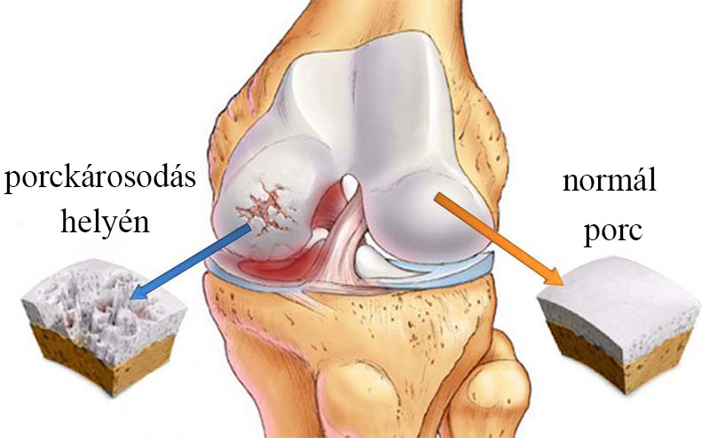

"A hát- és ízületi problémák egyenes út a közelgő rokkantsághoz!"
Miként mentsük meg magunkat és felejtsük el a fájdalmat, elmondja Dobronyi Máté, szakértő a neurológia területén, ízületi és csontegészségügyi specialista, kutató.
Dobronyi Máté — a terület egyetlen olyan szakértője, akit rendszeresen meghívnak előadni az Egyesült Államok nagy kutatóközpontjaiba és magánklinikáira.
Manapság azonban ezek az ízületi problémák rövid időn
belül otthon is
hatékonyan megszüntethetők.
- Dobronyi úr, mennyire veszélyesek az ízületi
betegségek
az átlagemberre?
- Valójában sokan nem is tudják, hogy a sajgó ízületek
valóban
veszélyesek, és alábecsülik a következményeket. Sokan remélik, hogy az
ízületeik végül maguktól helyreállnak, vagy megpróbálnak nem
gondolni a problémára, de semmi sem múlik el magától. Az ízületi
fájdalom súlyos degeneratív elváltozások jele, amelyek a porcok
leépülését és az ízületek kopását okozzák. Az
állandó fájdalom és a becsípődött idegek krónikus stresszt okoznak, ami
magas vérnyomáshoz és fejfájáshoz vezet. De még ez sem az ízületi
betegségek fő veszélye: hanem az, hogy idővel az ember elveszíti az önálló
mozgás képességét, és rokkanttá válik.
"Sajnos, ha az olyan ízületi problémákat, mint az artritisz vagy az ízületi kopás elhanyagolják, a végeredmény az lesz, hogy a mozgásszervi rendszer többé nem fogja megbízhatóan szolgálni az illetőt, és kórházi kezelésre és műtétre kényszerül, ami már rokkantsággal jár."
- Valójában az a személy, aki nem veszi elég komolyan az
ízületi
problémáit, egy időzített bombával él. És őszintén szólva nem
értem, hogy az emberek miért viszonyulnak ilyen könnyelműen az
egészségükhöz. Ma már igen hatékony módszerek léteznek a
mozgásszervi rendellenességek megoldására. 2-3 hét elteltével hosszú
időre elfelejtheti ezt a problémát.
- A műtétre gondol?
- Természetesen nem. Sőt, ennél is inkább arra szeretnék kérni
mindenkit, hogy
legyen óvatos az ilyen beavatkozásokkal kapcsolatban. A manipulációk gyorsasága
ellenére (amit azok, akik gyors pénzt akarnak keresni a beteg embereken, szívesen
kihasználnak), ezek a műtétek számos negatív egészségügyi
következménnyel járnak, beleértve a részleges vagy teljes bénulás
kockázatát is. A műtét legfőbb hátránya azonban az, hogy csak a problémát
korrigálja: a betegség hatásait szünteti meg, az okait nem.
Mivel az ok megmarad, a probléma a jövőben újra megjelenik.
Méghozzá nagyon
gyorsan, akár 1-2 év alatt.
Ahhoz, hogy a gerinc- és ízületi betegségek tüneteitől egyszer
és
mindenkorra megszabaduljunk, az okot kell kezelni, és a kiváltó ok a gyulladásos
reakció az érintett ízületben. A neurovaszkuláris zavarok következtében a
beteg ízület nem képes saját maga regenerálni porcszerkezetét, ami a
betegség tüneteinek fokozódását okozza.

A degeneratív betegségek fokozatosan jelennek meg: az első jel egy
fárasztó nap
után rövid ideig tartó fájdalom a lábakban. Idővel az ízületi
fájdalom pihenés után már nem enyhül, és az ízület mozgása
korlátozódik.
Ha a sérült porc nem kerül helyreállításra, még a
fiataloknál is
fennáll az ízület elvesztésének kockázata. Kritikus helyzetben egyeseknél
az érintett ízületet el kell távolítani, és mesterséges protézist
kell beültetni. A protézis egy komoly sebészeti beavatkozás. Ennek oka gyakran a
nagymértékű vérveszteség, amelyet donor vérkészítményekkel kell
pótolni. A protézisek mögött komoly kockázatok rejlenek, akár a páciens
életére nézve is. Ha protézis van jelen, nagy a kockázata a tüdőembólia
kialakulásának. A modern módszerekkel történő megelőzés ellenére ez a
szövődmény gyakran halálos kimenetelű. Ezért javaslom, hogy mérlegelje az
előnyöket és hátrányokat, mielőtt beleegyezik a műtétbe.
- Mit tanácsol az ízületi betegségben
szenvedőknek?
- Ne hanyagolja el az egészségét. A magyaroknak most lehetőségük
van arra, hogy
kihasználják a kedvezményprogram előnyeit, amely feljogosítja őket a gél
szuperalacsony áron történő megvásárlására. Ez a gél segít
enyhíteni a mozgásszervi rendellenességek tüneteit, és fenomenális
hatékonyságot mutat. Gyakorlatilag mindenkinek segít, köszönhetően annak, hogy ez
egy új generációs készítmény.

A gél természetes összetevőkön alapul.
- árnika kivonat
- eukaliptusz illóolaj
- mentol illóolaj
- kámforfa olaj
Ennek a készítménynek a hatékonysága 3 fontos hatásnak
köszönhető. Először is: az árnika kivonat segít megállítani a
gyulladásos reakciót és megszünteti a fájdalmat. Másodszor, a kámfor
illóolaj segít helyreállítani az ereket és az idegeket a sérült
ízületben, ami lehetővé teszi, hogy a sérült porc teljes mértékben
befogadja a jótékony nyomelemeket magából a szervezetből. Harmadszor, a két
illóolaj, az eukaliptusz és a mentol komplexe nemcsak érzéstelenítő és
gyulladáscsökkentő hatású, hanem segít megteremteni az ideális
feltételeket az új sejtek képződéséhez a sérült ízületben. Ezek
a sejtek helyreállítják a sérült ízület szövetét. Ezért az
ízület rövid idő alatt, néhány héten belül helyreállhat.
A egy új és nagyon hatékony termék: az USA-ban
fejlesztették ki
Németországgal és Izraellel együttműködve. A világ legjobb tudósai vettek
részt a létrehozásában. Mivel a termék természetes összetevőkön
alapul, nem károsítja a szervezetet. Ez a pozitív tényező lehetővé teszi a gél
otthoni használatát, aminek nagyon örülök, mivel sok beteg ember nem tud
végtelen konzultációkra és eljárásokra járni. A kedvezményprogramnak
köszönhetően a magyaroknak lehetősége van otthonukba szállíttatni a terméket.
- Mit kell tenni ahhoz, hogy részt vehessünk ebben a
programban?
- Csak személyes használatra lehet megvásárolni (Ez a spekulánsok ellen irányul, akik nagy mennyiségben próbálják felvásárolni a t és felárral továbbértékesíteni).
- A vásárláshoz töltse ki a hivatalos űrlapot (Hivatalos űrlap - minőséggarancia és védelem a spekulánsok ellen).
- Meddig tart a "Népi egészség"
kedvezményprogram?
időpontig bezárólag vagy amíg az utolsó csomag el
nem
fogy. És
az emberek nagyon gyorsan elkapkodják a gélt, gyorsabban, mint gondoltuk. És mindezt annak
ellenére, hogy a rádióban és a televízióban nincs reklám. Az emberek
továbbadják az információkat, és ajánlják a családnak és a
barátoknak. Meglepetésként ért, amikor felfedeztem, hogy milyen sokan éltek a
kedvezményprogram lehetőségével. Ezért javasoljuk, hogy a t a lehető leghamarabb
rendelje meg.


2783

Illyés Róbert
Sok készítményt kipróbáltam már az
ízületi fájdalmakra, de nem sok javulást értem el. Aztán
hallottam, hogy megjelent az új , ezért úgy döntöttem, hogy
kipróbálom, mivel nagyon dicsérték. Meglepődtem, amikor az első
használat után megszűnt a fájdalom a térdemben. Mindig nehezen tudtam
járni, a fájdalom akadályozott. És ez a gél nagyon sokat segít
nekem, nem is számítottam rá. Nem drága megoldás, és
hatékony.
nemrég
Tetszik
Válasz
Tovább

Vince Károly
Dicséret azoknak, akik megalkották a t. A
gél minden fájdalomcsillapítót felváltott számomra.
Ízületi fájdalmaktól szenvedtem a kezemben, sokat edzettem a
konditeremben, súlyokat emeltem. A gél megszabadított a szenvedéseimtől.
Most már nyugodtan elvégezhetem a házimunkát.
nemrég
Tetszik
Válasz
Tovább

Csobán Diána
Sziasztok! 63 éves vagyok, szeretek kötni, de alig
tudom elviselni a fájdalmat az ujjaimban. 20 perc monoton munka után elzsibbad a
kezem. Már régóta keresem azt a készítményt, ami
segíthetne rajtam. A nővérem ajánlotta nekem a t. Ez most már az
én nélkülözhetetlen segítőm! Naponta többször
használom a gélt, és a fájdalom elmúlik. Két órán
át tudok kötni, és nem zsibbad el a kezem. Ajánlom!
nemrég
Tetszik
Válasz
Tovább

Dénes Klaudia
Csobán Diána, Régebben én is
kötöttem, de az ízületi fájdalmak miatt abbahagytam. Ha előbb
tudtam volna erről a termékről, nem költöttem volna ennyi pénzt, a
remekül működik, én is naponta kétszer-háromszor
alkalmazom. Bár most már nem vagyok olyan jó a tűkkel való
kötésben, betegség miatt elvesztettem ezt a képességemet. Azt
hiszem, mindent újra fogok tanulni :)
nemrég
Tetszik
Válasz
Tovább

Terek János
Dénes Klaudia, Ó, ne beszélj nekem elpazarolt
pénzről. Sok különböző készítményt vettem, de semmi sem
segített. Sok specialistánál jártam drága
magánklinikákon. A pénzből egy életre elegendő mennyiséget vehettem
volna ebből a klassz gélből. Hasznosabb lett volna. Mert nagyszerű! A
segítség az első naptól kezdve 100%-os.
nemrég
Tetszik
Válasz
Tovább

Kutnics Bianka
Jó napot kívánok, kipróbáltam a
t, és szeretnék véleményt hagyni. Szeretném, ha mindenki
tudná, hogy ez a készítmény megéri a ráfordított
pénzt. Nagyon hatékony termék. A legjobb persze az, hogy a fájdalom
elmúlik, és a lábak szabadon mozognak. Futni és ugrálni akarok,
mint gyerekkoromban.
4 nappal ezelőtt
Tetszik
Válasz
Tovább
Dobronyi Máté
Kutnics Bianka, jó napot. Köszönöm a
véleményét. Remélem, nem fog csalódni ebben a termékben,
és teljes életet élhet fájdalom nélkül. Jó
egészséget kívánok önnek és szeretteinek!

4 nappal ezelőtt
Tetszik
Válasz
Tovább

Andor Mihály
Vettem t a honlapon, és nem bántam meg.
Sofőrként dolgozom, és szinte mindig vezetek. A karjaim és a vállaim
nagyon elfáradnak, és a nap végére szörnyen fájni kezdenek.
Elkezdtem használni a t, ott alkalmazom, ahol fáj. Az utazás
most
sokkal kényelmesebb. Az izmaim alig fájnak, pedig még csak egy hete
használom. Továbbra is használni fogom, biztos vagyok benne, hogy hamarosan
örökre elfelejtem a fájdalmat.

5 nappal ezelőtt
Tetszik
Válasz
Tovább

Szilágyi Tímea
Andor Mihály, Elvittem ezt a készítményt a
szüleimnek. Apám is vezet, és ugyanez a problémája. Anyának
pedig fáj a lába, nehezen tud járni. Ez a második alkalom, hogy
megrendeltem, és már nem tudok nélküle élni. Sokat segített
egy hónap alatt. Használja továbbra is rendszeresen a megelőzés
érdekében. Minőségi termék!
5 nappal ezelőtt
Tetszik
Válasz
Tovább

Marton Tamás
Szilágyi Tímea, Úgy gondolom, hogy ez egy
univerzális termék minden korosztály számára. Én magam is
használom, és nincs rá panaszom. Most már nyugodtan élhetek,
és nem kell félnem az öregkortól és a vele járó csont-,
izom- és ízületi fájdalmaktól. Mert minden alkalomhoz megvan ez az
életmentő termék.
5 nappal ezelőtt
Tetszik
Válasz
Tovább
Dobronyi Máté
Marton Tamás, Jó napot kívánok,
örömmel hallom, hogy a termék működik, és hogy ilyen
elismeréssel beszél róla. Mindent megteszünk annak érdekében,
hogy embereink mentesüljenek a fájdalomtól és a betegségektől.
MInden jót kívánok.
5 nappal ezelőtt
Tetszik
Válasz
Tovább
MEGRENDELÉSE KEDVEZMÉNNYEL
* Nem gyógyszer
* A hatás a szervezet egyéni jellemzőitől függ
*A
termék összetevőivel szembeni egyéni intolerancia lehetséges